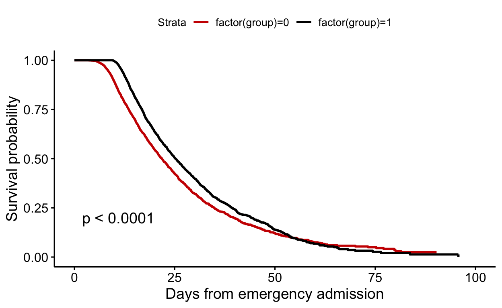
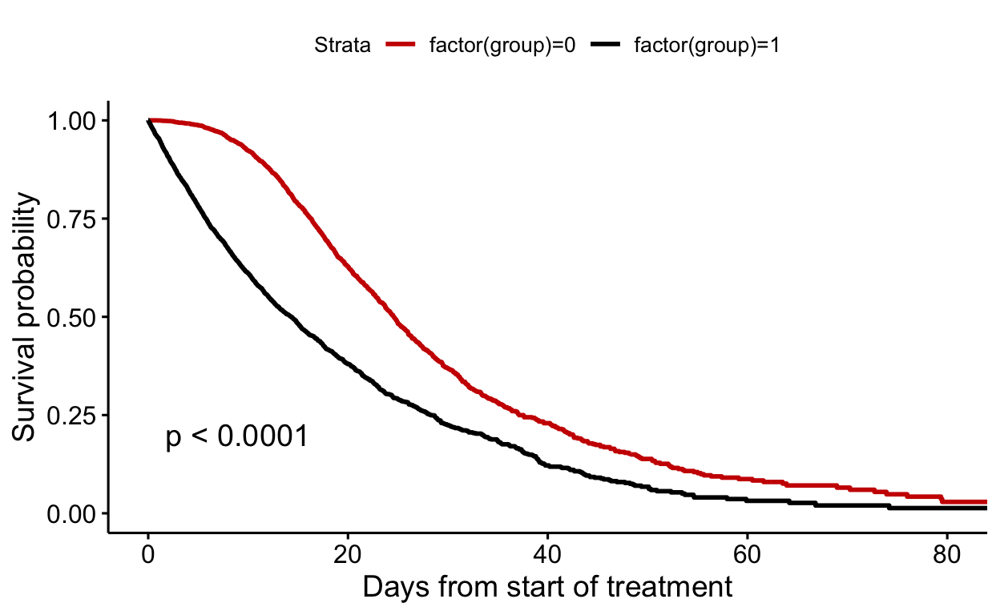
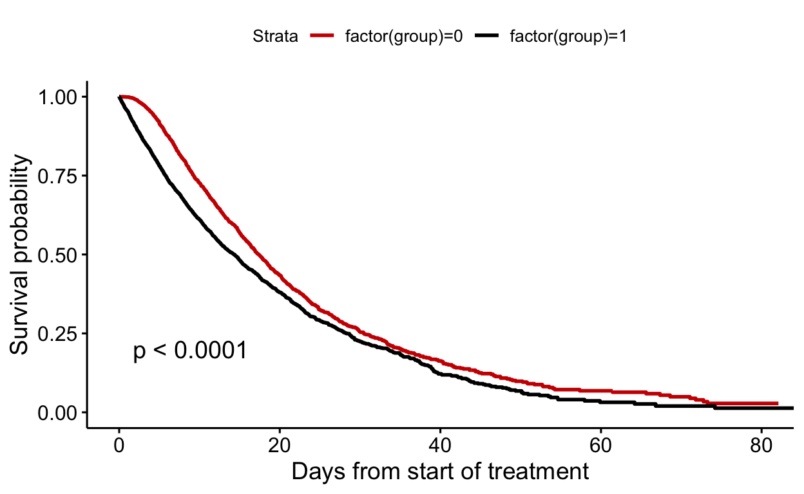
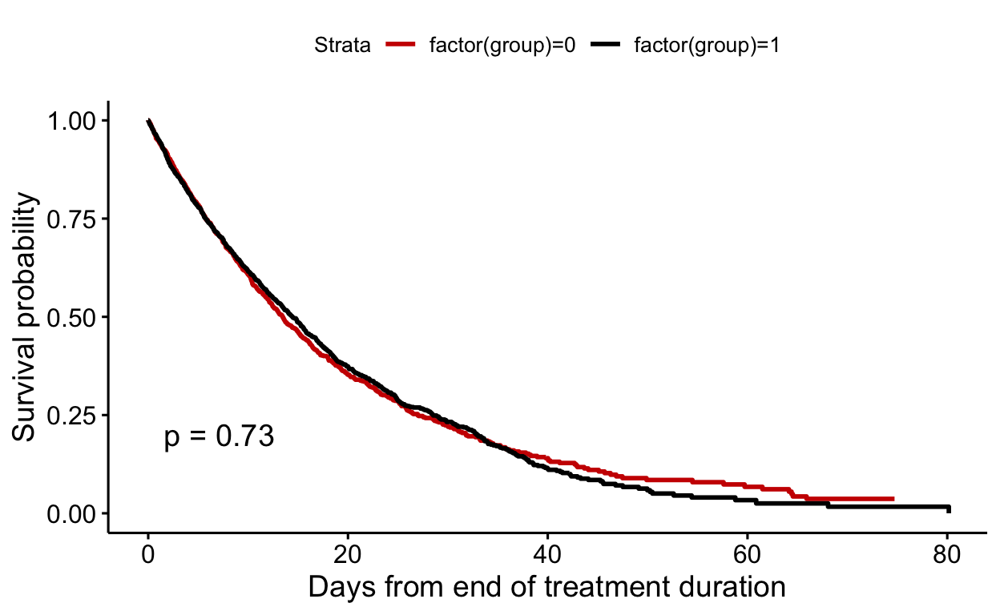

Background
Immortal time bias might arise, if - for example - individuals are assigned to an exposure or treatment group (and on information) after time zero (Hernán et al. (2016)). Consequently, group assignment is not aligned with time zero and individuals inherently experience no outcome event for a specific time period (they are immortal when the outcome of interest is time to death). Immortal time bias is common when analyzing observational studies (Suissa (2007), Lévesque et al. (2010)). Other terminology for immortal time bias is time dependent bias or survival bias. In this vignette we introduce several methods to address immortal time bias (Zhou et al. (2005), Hernán and Robins (2016)).
Example
We consider a study population of 10,000 patients admitted to an emergency unit. Patients with a more severe admission status are treated more quickly. Clinicians are interested whether the time from admission to time to treatment affect survival and group patients into two treatment groups: Short and long time to treatment after emergency admission.
- Research question: What is the effect of the time to treatment group assignment on survival?
- Study design: Cohort study
- Outcome of interest: Time to death or end of follow-up
- Observation time: Admission to end of follow-up
- Predictor of interest: Time to treatment after admission
- Confounders: Severity
The used variables from the data are:
| Variable | Definition | Coding |
|---|---|---|
| group | Group assignment | 0=Short (unexposed), 1=Long (exposed) |
| severity | Severity status | 1=Severe, 0=Non-severe |
| death | Death | 1=Death, 0=Alive |
| fup | Follow-up time | Non-negative number |
Knowledge from the crystal ball
Because we simulated the data, we know that group assignment has no effect on mortality.
Analysis strategy
Zhou et al. (2005), Karim et al. (2016), Hernán and Robins (2016) and Hernán et al. (2016) discuss different analysis strategies for addressing (or not adressing) immortal time bias. In this vignette we summarise the investigated methods from the above mentioned articles:
| Method | Definition |
|---|---|
| 1 | Group assignment at time zero |
| 2 | Random time assignment unexposed group |
| 3 | Matched time assignment unexposed group |
| 4 | Time zero at end of treatment |
| 5 | Time dependent treatment |
| 6 | Cloning |
Descriptive table
The table below shows a descriptive summary of the study population, by group assignment.
data %>% select(!c(id, censored, time_to_death)) %>%
tbl_summary(by=group_lab, label=list(group ~ "Group assignment"))
| Characteristic | Short, N = 5,0001 | Long, N = 5,0001 |
|---|---|---|
| fup | 12 (10, 17) | 16 (13, 20) |
| time_to_treatment | 7.74 (6.63, 8.60) | 10.66 (9.97, 11.59) |
| death | 1,643 (33%) | 1,607 (32%) |
| Group assignment | 0 (0%) | 5,000 (100%) |
| severity | 3,991 (80%) | 2,221 (44%) |
| 1 Median (IQR); n (%) | ||
Method 1: Fixed group assignment at time zero
Time zero was time of emergency admission. Treatment was assigned according to whether patients had a short or long time to treatment. No patients were excluded from the analysis.
mod <- survfit(Surv(fup, death)~factor(group), data=data)
ggsurvplot(mod, data=data, palette=c("#CC0000", "black"), censor=F, pval=T)

Method 2: Randomly assign time zero for short group
Treatment was assigned according to whether patients had a short or long time to treatment. Time zero was set at start of treatment, but time to treatment for the short group was randomly replaced by a time to treatment from the time to treatment range of the long group.
data_method2 <- data
# New time to treament for short group
data_method2$time_to_treatment_new <- data_method2$time_to_treatment
data_method2$time_to_treatment_new[data_method2$group==0] <-
runif(length(data_method2$time_to_treatment_new[data_method2$group==0]), median(time_to_treatment), max(time_to_treatment))
# Exclusion of patients:
# If original follow-up time of patients < random treatment time
data_method2$exclude <- 0
data_method2$exclude[data_method2$group==0 & data_method2$death==1] <-
ifelse(data_method2$fup[data_method2$group==0 & data_method2$death==1]<data_method2$time_to_treatment_new[data_method2$group==0 & data_method2$death==1], 1, 0)
829 (8.3) individuals from the short group who died before time zero were excluded.
data_method2 <- data_method2 %>% filter(exclude==0)
# Time zero: Start of treatment
# Difference between new random treatment time - original treatment time (=zero for long group)
data_method2$fup <- pmin(data_method2$time_to_treatment_new-data_method2$time_to_treatment+data_method2$time_to_death, data_method2$time_to_treatment_new-data_method2$time_to_treatment+data_method2$censored)
# Replace death indicator
data_method2$death <- ifelse(data_method2$time_to_treatment_new-data_method2$time_to_treatment+data_method2$time_to_death<=data_method2$time_to_treatment_new-data_method2$time_to_treatment+data_method2$censored, 1, 0)
mod <- survfit(Surv(fup, death)~factor(group), data=data_method2)
ggsurvplot(mod, data=data_method2, palette=c("#CC0000", "black"), censor=F, pval=T, xlab="Time from start of treatment")

Method 3: Matched treatment duration
Treatment was assigned according to whether patients had a short or long time to treatment. Time zero was set at start of treatment, but time to treatment for the short group was randomly replaced by a time to treatment from the time to treatment range of the long group. This methods corrects for time to treatment imbalances between the two groups (in contrast to method 2).
data_method3 <- data
# Get time to treatment from long group
sample_time <- data_method3$time_to_treatment[data_method3$group==1]
# New time to treatment for short group: Matching from long group
data_method3$time_to_treatment_new <- data_method3$time_to_treatment
data_method3$time_to_treatment_new[data_method3$group==0] <- sample(sample_time, length(data_method3$time_to_treatment[data_method3$group==0]))
# Exclusion of patients
data_method3$exclude <- 0
data_method3$exclude[data_method3$group==0 & data_method3$death==1] <- ifelse(data_method3$fup[data_method3$group==0 & data_method3$death==1]<data_method3$time_to_treatment_new[data_method3$group==0 & data_method3$death==1], 1, 0)
634 (6.3) individuals from the short group who die before time zero were excluded.
data_method3 <- data_method3 %>% filter(exclude==0)
# Time zero: Start of treatment
# Difference between new matched treatment time - original treatment time (=zero for long group)
data_method3$fup <- pmin(data_method3$time_to_treatment_new-data_method3$time_to_treatment+data_method3$time_to_death, data_method3$time_to_treatment_new-data_method3$time_to_treatment+data_method3$censored)
data_method3$fup <- pmin(data_method3$time_to_death, data_method3$censored)
# Replace death indicator
data_method3$death <- ifelse(data_method3$time_to_treatment_new-data_method3$time_to_treatment+data_method3$time_to_death<=data_method3$time_to_treatment_new-data_method3$time_to_treatment+data_method3$censored, 1, 0)
mod <- survfit(Surv(fup, death)~factor(group), data=data_method3)
ggsurvplot(mod, data=data_method3, palette=c("#CC0000", "black"), censor=F, pval=T, xlab="Time from start of treatment")

Method 4: Time zero at end of treatment
Treatment was assigned according to whether patients had a short or long time to treatment. Individuals were followed-up from the end of treatment duration.
5922 (59.2) individuals from both groups who died before time zero were excluded.
data_method4 <- data_method4 %>% filter(exclude==0)
# Shift time to follow-up
data_method4$fup <- data_method4$fup-max(time_to_treatment)
mod <- survfit(Surv(fup, death)~factor(group), data=data_method4)
ggsurvplot(mod, data=data_method4, palette=c("#CC0000", "black"), censor=F, pval=T, xlab="Time from end of treatment duration")

Method 5: Time-dependent treatment
Treatment assignment was 0 (“short”) as long as a patient had a time to treatment smaller than the median time to treatment, and 1 (“long”) otherwise. No individuals were excluded.
library(splitstackshape)
# For "smoother" curves: Fup*10
multiplier <- 10
data$fup2 <- data$fup*multiplier
data_discrete_surv <- expandRows(data, count="fup2", drop=F) %>% arrange(id)
# Count indicator: How many follow-up days per individuals
data_discrete_surv <- data_discrete_surv %>% group_by(id) %>% mutate(ind=1, time=cumsum(ind)-1)
data_discrete_surv$ind <- NULL
# Maximal follow-up day
data_discrete_surv <- data_discrete_surv %>% group_by(id) %>% mutate(max_time=max(time))
# Correct death
data_discrete_surv$death[data_discrete_surv$time < data_discrete_surv$max_time] <- 0
# Shift days
data_discrete_surv <- data_discrete_surv %>% group_by(id) %>% mutate(time2=lead(time))
# Fill last day
data_discrete_surv <- data_discrete_surv %>% group_by(id) %>% fill(time2)
data_discrete_surv$time2[data_discrete_surv$time==data_discrete_surv$max_time] <- data_discrete_surv$time2[data_discrete_surv$time==data_discrete_surv$max_time]+1
# Create time-dependent treatment
data_discrete_surv <- data_discrete_surv %>% group_by(id) %>% mutate(group_timedependent=0)
data_discrete_surv$group_timedependent[data_discrete_surv$time>=data_discrete_surv$time_to_treatment*multiplier & data_discrete_surv$group==1] <- 1
mod_km <- survfit(Surv(time=time/multiplier, time2=time2/multiplier, event=death)~group_timedependent, data=data_discrete_surv, cluster = id)
ggsurvplot(mod_km, data=data_discrete_surv, palette=c("#CC0000", "black"), censor=F, pval=F, xlab="Time from emergency admission")

Method 6: Cloning
Each patient was cloned and received the not observed exposure or treatment. This lead to two pseudopopulations, each with a size of 10,000 patients. Patients in one pseudopopulation (those having a short time to treatment duration) were censored if the time to treatment is longer than the median time to treatment. Patients in the pseudopopulation a long time to treatment duration are censored if patients were alive and had a time to treatment shorter than the median time to treatment. Censoring indicates protocol deviations here. No patients are excluded from the analysis.
Independent Sampling design (with replacement)
svydesign(id = ~1, weights = ~ipw, data = data_clone)Call:
svycoxph(formula = Surv(fup, death) ~ group, design = svy_design)
n= 20000, number of events= 4893
coef exp(coef) se(coef) robust se z Pr(>|z|)
group -0.08321 0.92016 0.02877 0.03379 -2.462 0.0138 *
---
Signif. codes: 0 '***' 0.001 '**' 0.01 '*' 0.05 '.' 0.1 ' ' 1
exp(coef) exp(-coef) lower .95 upper .95
group 0.9202 1.087 0.8612 0.9832
Concordance= 0.512 (se = 0.005 )
Likelihood ratio test= NA on 1 df, p=NA
Wald test = 6.06 on 1 df, p=0.01
Score (logrank) test = NA on 1 df, p=NA
(Note: the likelihood ratio and score tests assume independence of
observations within a cluster, the Wald and robust score tests do not).
Conclusion
Immortal time bias is common in time to event analysis of observational data. In the present vignette we presented several methods for addressing immortal time bias. Similar to Zhou et al. (2005) we conclude that the investigated methods 1 and 2 did not adequately address immortal time bias. In contrast to Zhou et al. (2005) we found that method 3 did not adequately address immortal time bias too, which was also highlighted in Karim et al. (2016). Methods 4 to 5 were able to address immortal time bias. We recommend to compare some of the suggested methods in a real world analysis in sensitivity analyses and to be aware of their limitations (for example, exclusion of patients which leads to selection bias).